품질경영산업기사 (2015-09-19 기출문제)
1과목: 실험계획법
1. 동일한 물건을 생산하는 4대의 기계에서 부적합품 여부에 대한 동일성에 관한 실험을 하였다. 적합품이면 0, 부적합품이면 1의 값을 주기로 하고, 4대의 기계에서 100개씩의 제품을 만들어 부적합품 여부를 검사하여 [표]와 같은 결과를 얻었다. 이 자료에서 오차항의 자유도(ve)는 얼마인가?
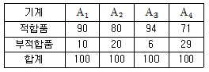
- 362
- 374
- 396
- 399
(정답률: 82%)

2. 반응변수 y와 설명변수 x에 대한 직선 회귀식을 구했을 때 기울기 값은? (단,
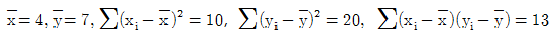
이다.)- 0.77
- 1.3
- 1.8
- 2.5
(정답률: 60%)
3. 인자 A는 3수준, 인자 B는 4수준인 반복없는 모수모형 2원배치법에서 다음의 [데이터]를 얻었다. 분산분석 결과 A, B 인자가 모두 유의하다면
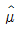
(A1B2)의 점추정값은 얼마인가?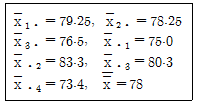
- 75.25
- 79.50
- 80.30
- 84.55
(정답률: 48%)
4. 인자 A가 4수준, 인자 B가 5수준인 반복이 없는 2원배치 실험에 있어서 결측치가 1개 있을 때 총 자유도는? (단, 인자 A와 B는 모수모형이다.)
- 14
- 15
- 18
- 19
(정답률: 54%)
5. 2 수준계 직교배열포 중 가장 작은 것은?
- L2(22)형
- L4(23)형
- L4(25)형
- L4(27)형
(정답률: 75%)
6. 라틴방격법을 이용한 실험결과로 얻은 데이터의 구조식은? (단,
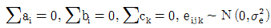
이다.)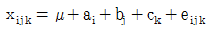
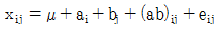
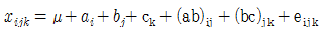
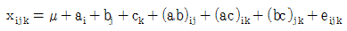
(정답률: 70%)
7. 반복이 일정하고 ℓ=4, m=5인 1원배치 실험에서
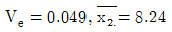
였다. μ(A)2를 신뢰율 95%로 구간추정 하면 약 얼마인가? (단, t0.975(15)=2.131, t0.975(16)=2.210, t0.95(15)=1.753, t0.95(16)=1.746 이다.)- 8.004 ≤ μ(A)2 ≤ 8.476
- 8.030 ≤ μ(A)2 ≤ 8.450
- 8.047 ≤ μ(A)2 ≤ 8.433
- 8.066 ≤ μ(A)2 ≤ 8.414
(정답률: 50%)
8. 라틴방격법에서 A, B, C 3인자가 모두 유의할 때 조합조건 AiBjCk에서 모평균을 추정하기 위한 유효반복수(ns)는 얼마인가? (단, 수준수는 3이다.)
- 5/9
- 7/9
- 9/7
- 9/5
(정답률: 84%)
9. 반복이 없는 2원배치법에 대한 설명으로 틀린 것은?
- 데이터 구조식은
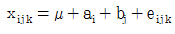
이다. - 일반적으로 두 인자간의 교호작용은 나타나지 않는다.
- 인자가 두 개이며, 각 처리조합 내의 측정치가 1개인 경우를 말한다.
- 1인자가 모수인자이고, 다른 인자가 변량인자인 경우를 난괴법이라고 한다.
(정답률: 56%)
10. 인자 A의 수준수는 4이고, 반복수는 3으로 일정한 1원배치 실험에서 오차의 자유도(ve)는?
- 3
- 8
- 9
- 11
(정답률: 70%)
11. 난괴법의 데이터 구조식에 관한 내용으로 맞는 것은? (단, 인자 A는 모수인자, 인자 B는 변량인자이며, i=1, 2, ㆍㆍㆍ, ℓ, j=1, 2, ㆍㆍㆍ, m이다.)
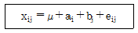
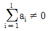
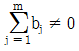
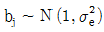
이고 서로 독립이다.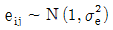
이고 서로 독립이다.
(정답률: 60%)
12. 반복이 있는 2원배치법(모수모형)에서 A의 변동(SA)은?
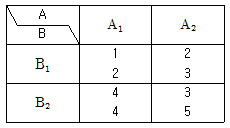
- 0.5
- 1
- 2
- 4
(정답률: 43%)
13. 모수인자 A, B의 수준수가 각각 ℓ,m이고, 반복수가 r회인 2원배치 실험에서 요인 A의 불편분산의 기대치는?
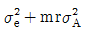
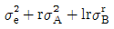
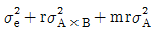
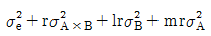
(정답률: 70%)
14. 난괴법 실험에서 A(모수인자), B(변량인자) 각각 3수준씩 선정하여 분석한 경우 A의 평균제곱의 기댓값 E(VA)는?
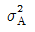
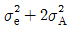
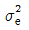
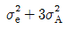
(정답률: 80%)
15. 1원배치법에서 분산분석 후 F검정을 하고자 한다. 각 수준에서 주 효과를 ai(i=1,2,∙∙∙ℓ)라고 할 때 틀린 것은?
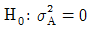
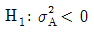
- H0:a1=a2=∙∙∙aℓ=0
- H1:ai는 모두 0이 아니다.
(정답률: 60%)
16. 반복수가 5회인 3수준 1원배치 모수모형 실험을 설계하여 15회의 실험을 완전 랜덤화하여 실시하였으나, 실험 과정에서 예상하지 못했던 문제점이 발생하여 A1에서 5회, A2에서 3회, A3에서 4회만 실험하였다. 적절한 분석 모형?
- 난괴법
- 라틴 방격법
- 반복이 같은 1원배치 모수모형
- 반복이 같지 않은 1원배치 모수모형
(정답률: 83%)
17. 인자의 수준과 수준수를 결정하는 방법으로 틀린 것은?
- 최적이라고 예상되는 인자의 수준은 포함시켜야 한다.
- 수준수는 2 이상을 선택하되 가급적 지나치게 많은 수준은 지양한다.
- 현재 사용되고 있는 인자의 수준은 포함시키는 것이 좋다.
- 실제 적용이 불가능한 인자의 수준도 반드시 하나 이상 포함되어야 한다.
(정답률: 79%)
18. 다음 표는 인자 A, B를 2수준으로 적교배열표에 의한 실험을 한 결과이다. A×B의 효과는? (단, 높은 수준은 “+”로, 낮은 수준은 “-”로 표시 했다.)
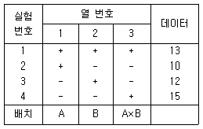
- 3
- 4
- 6
- 8
(정답률: 54%)
19. 다음은 1원배치 실험을 하여 얻어진 분산분석표의 일부이다. 오차의 순변동은 얼마인가? (단, 인자 A의 수준수는 4이다.)
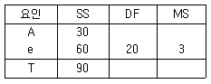
- 51
- 60
- 69
- 72
(정답률: 52%)
20. 다음은 반복이 4회로 일정한 어느 변량모형 1원배치 실험결과이다. 이 실험에 대한 설명 중 틀린 것은?
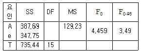
- 오차항의 자유도는 11이다.
- 인자 A의 수준 수는 4이다.
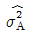
은 약 25.06으로 추정된다.- 오차항의 편차제곱평균은 약 28.98 이다.
(정답률: 70%)
2과목: 통계적품질관리
21. 제품의 강도를 측정하였더니 다음과 같은 데이터를 얻었다. [보기]를 이용하여 강도에 대한 모분산의 95% 신뢰구간을 구하면 약 얼마인가?
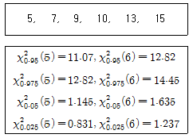
- (1.11, 3.88)
- (2.32, 9.10)
- (4.7, 55.6)
- (5.4, 82.8)
(정답률: 54%)
22.  관리도에서
관리도에서
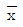
관리도의 관리한계선을 계산할 때 활용하는 A2의 계산식으로 맞는 것은?- 3/d2
- 3/√n
- 3/(C2√n)
- 3/(d2√n)
(정답률: 17%)
23. X1과 X2는 서로 독립인 정규분포로서 평균과 분산이 각각 μ, σ2이라고 할 때, X1-X2의 분포도 정규분포를 한다. 이 때 X1-X2의 평균과 분산은 각각 얼마인가?
- 0, σ2
- 0, 2σ2
- 2μ, σ2
- 2μ, 2σ2
(정답률: 79%)
24. 관리도의 관리한계선의 의미 설명으로 맞는 것은?
- 제품의 공차 한계
- 제품의 규격 한계
- 제품의 양부 판정 기준
- 공정의 이상 판정 기준
(정답률: 66%)
25. 계수형 샘플링검사 절차-제1부 : 로트별 합격품질한계(AQL) 지표형 샘플링검사 방식(KS Q ISO 2859-1 : 2014)에서 분수 합격판정개수의 샘플링 검사 방식을 적용할 때 샘플링검사 방식이 일정하지 않은 경우 합부 판정 스코어에 대한 내용 중 맞는 것은?
- 합격판정개수가 0인 경우 : 합격판정스코어는 7점이 가산된다.
- 합격판정개수가 1/2인 경우 : 합부 판정 스코어는 2점이 가산된다.
- 합격판정개수가 1/3인 경우 : 합격 판정 스코어는 3점이 가산된다.
- 합격판정개수가 1/5인 경우 : 합부 판정 스코어는 5점이 가산된다.
(정답률: 60%)
26. 계수 및 계량 규준형 1회 샘플링 검사(KS Q 0001 : 2013)에서 로트의 부적합품률을 보증하는 경우 P0=1%, P1=9%이고, α=0.⑤, β=0.1일 때 합격판정계수 k의 값은 약 얼마인가? (단, K0.⑤ = 1.65, K0.1 = 1.28, K0.01 = 2.33, K0.09 = 1.34)
- 1.25
- 1.45
- 1.77
- 2.93
(정답률: 66%)
27. 모부적합품률에 대한 검정을 할 때의 통계량 표시로 맞는 것은?
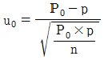
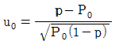
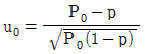
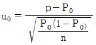
(정답률: 59%)
28. 모평균의 구간추정에 대한 설명 중 틀린 것은?
- 분산이 크면 신뢰구간은 좁아진다.
- 신뢰수준을 높이면 신뢰구간이 넓어진다.
- 시료의 크기를 크게 하면 신뢰구간이 좁아진다.
- 분산과 표본의 크기는 신뢰구간의 크기에 상반된 작용을 한다.
(정답률: 47%)
29. 이산형 확률분포에 대한 설명 중 틀린 것은?
- 초기하 분포가 N/n>10일 때는 이항분포를 따른다.
- 포아송분포가 nP≥5일 때 이항분포에 근사된다.
- 이항분포가 P≤0.5이고, nP≥5일 때 정규분포에 근사된다.
- 이항분포가 P≤0.1이고, nP=0.1~10일 때 포아송분포에 근사된다.
(정답률: 59%)
30. 전수검사와 샘플링검사를 비교 설명한 내용으로 틀린 것은?
- 샘플링검사는 어느 정도 부적합품의 혼입이 인정된다.
- 불완전한 전수검사도 샘플링검사보다 더 큰 신뢰성을 보장받는다.
- 일반적인 경우 전수검사가 샘플링검사보다 검사비용이 더 많이 든다.
- 샘플링 검사는 품질향상에 대해 생산자에게 자극을 주고자 하는 경우에도 사용된다.
(정답률: 66%)
31. 모집단을 몇 개의 층으로 나누어 각 층마다 각각 랜덤으로 시료를 추출하는 방법으로 층간의 차는 가능한 한 크게 하고 층내는 균일하게 층별함을 원칙으로 하는 샘플링 검사는?
- 층별 샘플링
- 취락 샘플링
- 계통 샘플링
- 2단계 샘플링
(정답률: 83%)
32. 상관계수에 대한 설명 중 틀린 것은?
- 상관계수의 제곱의 값(r2)을 기여율이라 한다.
- 상관계수 r은 -1부터 +1까지의 값을 취한다.
- 상관계수의 값이 1 또는 –1에 가까울수록 일정한 경향선으로부터의 산포는 커진다.
- 2개의 변량 x와 y가 있을 경우, x와 y의 선형관계를 표시하는 척도를 상관계수라 한다.
(정답률: 85%)
33. x관리도에서
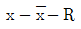
사용하는 경우는?- 합리적인 군으로 나눌 수 있을 때
- 정해진 제조공정으로부터 1개의 측정치밖에 얻을 수 없을 때
- 정해진 제조공정의 내부가 균일하여, 많은 측정치를 수집해도 의미가 적을 때
- 측정치를 얻는 데 시간이나 경비가 많이 들어서 정해진 제조공정으로부터 1개의 측정치밖에 구할 수 없을 때
(정답률: 47%)
34. P관리도에 대한 설명 중 틀린 것은?
- 부적합품률을 관리하기 위한 관리도이다.
- 대표적인 계수형 관리도로 널리 이용된다.
- 시로의 크기가 일정하지 않으면 사용할 수 없다.
- 관리한계선은 이항분포의 정규근사를 이용해 정한다.
(정답률: 59%)
35. 도수분포표를 작성하려고 측정치를 조사하였더니 최소치가 2.502이고 최대치가 2.545이다. 계급의 간격을 0.0⑤로 하고, 최소치 2.502가 들어가도록 제1계급의 경계하한을 2.50⑤로 시작했다면 제2계급의 중심치는 얼마인가?
- 2.503
- 2.508
- 2.510
- 2.512
(정답률: 76%)
36. 로트의 크기가 작을 때 샘플링 검사에서 로트가 합격될 확률 L(p)를 구하는 공식은? (단, N은 로트의 크기, n은 시료의 크기, c는 합격판정갯수, P는 로트의 부적합품률이다.)
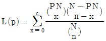
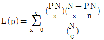

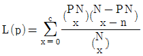
(정답률: 71%)
37. 제1종의 과오에 대한 내용으로 맞는 것은?
- (1-α)에 해당하는 확률
- (1-β)에 해당하는 확률
- 귀무가설이 옳은데도 불구하고 이를 기각하는 과오
- 귀무가설이 옳지 않은데도 불구하고 이를 채택하는 과오
(정답률: 84%)
38. 중간제품의 부적합품률이 3%, 중간제품의 양품만을 사용하여 가공하였을 때의 제품의 부적합품률이 10% 라고 하면 원료로부터 양품이 얻어질 확률은 약 얼마인가?
- 30%
- 70%
- 87%
- 97%
(정답률: 75%)
39. 단위면적의 결점수를 관리하는 c관리도의 중심선(CL)이 16이라고 한다. UCL과 LCL은 각각 얼마인가?
- LCL=0,UCL=12
- LCL=0, UCL=28
- LCL=4, UCL=12
- LCL=4, UCL=28
(정답률: 78%)
40.
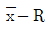
관리도에서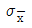
=16.2, σb=8.4, σw=24일 때, 샘플의 크기는 약 얼마인가?- 1
- 3
- 5
- 7
(정답률: 74%)
3과목: 생산시스템
41. 학습효과(learning effect)에 관한 설명으로 틀린 것은?
- 작업을 반복함에 따라 공수가 감소되는 현상을 말한다.
- 학습률이 낮을수록 학습곡선은 완만하며 학습효과도 낮다.
- 새로운 작업의 시초에는 학습효과가 높고, 시간이 지남에 따라 점차 줄어든다.
- 생산량이 누적되어 증가함에 따라 작업소요시간은 지수함수로 감소된다.
(정답률: 55%)
42. 공정관리에 관한 설명으로 틀린 것은?
- 개별 작업장의 작업순서를 결정하는 작업배정규칙에는 FCFS, SOT 등이 있다.
- 여력관리는 주문생산에서와 같이 상세한 계획수립이 어렵고 계획변경이 빈번한 경우에 필요한 공정관리의 통제기능이다.
- 각 작업을 개시해서 완료할 때까지에 소요되는 표준적인 일정으로 일정계획의 기초가 되는 것을 기준일정이라 한다.
- 공정관리기능으로 통제기능에는 공수계획, 절차계획, 일정계획이 있으며, 계획기능으로는 작업배정, 여력관리, 진도관리가 있다.
(정답률: 67%)
43. 긴급주문이나 지연작업에 대하여 작업의 완료시점을 조정하기 위해 작업의 진도를 촉진 시키는 것을 무엇이라 하는가?
- 작업배정
- 여력관리
- 수요예측
- 작업독촉
(정답률: 77%)
44. 생산의 형태를 예측생산과 주문생산으로 분류할 때 주문생산의 특징에 해당되지 않는 것은?
- 재고관리가 중요시 된다.
- 변화에 대한 유연성이 크다.
- 생산설비는 주로 범용설비를 사용한다.
- 제품의 종류가 다양하고 고가인 경우가 많다.
(정답률: 69%)
45. 수요예측에 대한 설명 중 틀린 것은?
- 가중이동평균법은 각 자료치에 상관계수를 계산하여 두 인자 간의 관계를 미래수요에 적용하는 것이다.
- 추세분석법은 시계열을 잘 관통하는 추세선을 구한 다음 그 추세선상에서 미래수요를 예측하는 방법이다.
- 단순이동평균법은 전기수요법을 좀 더 발전시킨 것으로 과거일정기간의 실적을 평균해서 예측하는 방법이다.
- 지수평활법은 지수적으로 감소하는 가중치를 이용하여 최근의 자료에 더 큰 비중을 두고 오래된 자료에 더 적은 비중을 두어 미래수요를 예측한다.
(정답률: 47%)
46. 표준자료법의 특성에 관한 설명 중 맞는 것은?
- 레이팅(rating)이 필요하다.
- 표준시간의 정도가 뛰어나다.
- 제조원가의 사전견적이 가능하다.
- 표준자료작성의 초기비용이 저렴하다.
(정답률: 46%)
47. 고임금ㆍ저노무비의 원칙과 관계되는 시스템은?
- 포드시스템
- 호오손시스템
- 길브레스시스템
- 테일러시스템
(정답률: 81%)
48. 관측시간의 대표치가 0.5분이고, 레이팅 평가치가 125%일 경우 정미시간은 약 얼마인가?
- 0.4분
- 0.525분
- 0.625분
- 1.75분
(정답률: 65%)
49. GT에 의한 생산 또는 로트생산시스템에 가장 적합한 배치형태는?
- 공정별 배치
- 제품별 배치
- 그룹별 배치
- 제품 고정형 배치
(정답률: 58%)
50. MRP의 투입요소가 아닌 것은?
- 자재명세서
- 주일정계획
- 재고기록철
- 별주일정보고서
(정답률: 60%)
51. AOA(activity on arc)방식의 계획공정도(Network)에서 쓰이는 화살표(→)가 의미하는 것은?
- 작업을 의미
- 작업개시를 의미
- 작업완료를 의미
- 작업결합을 의미
(정답률: 75%)
52. 4가지 주문작업을 1대의 기계에서 처리하고자 한다. 최단처리시간(SPT) 규칙에 의해 작업순서를 결정할 경우 평균납기지연일은 며칠인가?
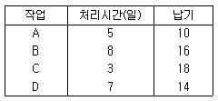
- 1일
- 2일
- 3일
- 4일
(정답률: 71%)
53. 생산보전방법 중 설비의 신뢰성과 보전성 향상을 위하여 설비 제작 시에 가장 필요한 보전방식은?
- 사후보전
- 예지보전
- 일상보전
- 보전예방
(정답률: 54%)
54. 5S(5행)의 구성요소가 아닌 것은?
- 정리
- 청소
- 개선
- 생활화
(정답률: 75%)
55. 내주제작, 외주제작의 판단기준에서 일반적으로 외주제작을 해야 할 경우에 해당되지 않는 것은?
- 기밀보장이 필요한 것
- 주문처에서 외주를 지정하는 것
- 외주기업에서 특허권을 가지고 있는 것
- 사내에 필요한 기술이나 설비가 아닌 것
(정답률: 79%)
56. 동작분석 시 연구대상이 된 신체부분에 광원을 부착하여 일정한 시간 간격으로 비대칭적인 밝기로 점멸시키면서 사진 촬영을 하여 동작에 소요된 시간, 속도, 가속도를 알 수 있는 것은?
- 메모모션 분석
- 스트로보 사진분석
- 크로노 사이클 그래프
- 아이 카메라(eye camera)
(정답률: 67%)
57. 컨베이어로 구성된 흐름작업에 있어 공정별 작업량이 각각 다를 때 가장 큰 작업량을 가진 공정을 무엇이라 하는가?
- 전공정
- 애로공정
- 후공정
- 가공공정
(정답률: 80%)
58. 적시생산시스템(JIT)의 특징 중 틀린 것은?
- 소수인화(小數人化)로 탄력적 인력운영이 가능하다.
- 시스템의 성격은 사전 계획대로 추진하는 정방향의 push system이다.
- 설비배치의 전환과 다기능제도로 작업의 유연성과 제품의 다양성이 가능하다.
- 납품업자는 사내 생산팀의 한 공정으로 간주되어 JIT원리가 그대로 적용된다.
(정답률: 71%)
59. 화합물 A를 200톤 생산하는 데 화합물 B는 188톤이 소비되었으며, 화합물 B를 100톤 생산하는 데 90톤의 원료 C가 소비되었다. 이 때 화합물 A 1톤당 원료 C의 원단위는 얼마인가?
- 0.846톤
- 0.957톤
- 1.044톤
- 1.178톤
(정답률: 46%)
60. 다음에서 EOQ(경제 발주량)는 얼마인가?
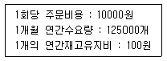
- 2500개
- 5000개
- 7000개
- 10000개
(정답률: 66%)
4과목: 품질경영
61. 산업표준화법 시행규칙에 따른 광공업품을 인증대상 품목으로 지정해야 하는 경우가 아닌 것은?
- 원자재에 해당되지만 다른 산업에 전혀 영향을 미치지 않는 경우
- 독과점 또는 가격변동 등으로 품질이 크게 떨어질 것이 우려되는 경우
- 소비자의 보호 및 피해 방지를 위하여 한국산업표준에 맞는 것임을 표시할 필요가 있는 경우
- 품질을 식별하기가 쉽지 아니하여 소비자 보호를 위하여 한국산업표준에 맞는 것임을 표시할 필요가 있는 경우
(정답률: 43%)
62. 품질비용에 관한 쥬란의 1 : 10 : 100의 법칙을 적용할 때, 생산단계에서 바로 잡는 데 100원이 소요되는 것을 방치하면 고객에게 전달된 후 얼마의 손실이 발생할 것으로 예측되는가?
- 10원
- 100원
- 1000원
- 10000원
(정답률: 60%)
63. 품질보증 시스템 운영에 대한 설명으로 가장 거리가 먼 것은?
- 품질 시스템의 피드백 과정을 명확히 해야 한다.
- 시스템운영을 위한 수단ㆍ용어ㆍ운영규정이 정해져야 한다.
- 처음에 품질 시스템을 제대로 만들어 가능한 한 변경하지 않는 것이 좋다.
- 다음 단계로서의 진행 가부를 결정하기 위한 평가항목, 평가방법이 명확하게 제시되어야 한다.
(정답률: 74%)
64. 브레인스토밍기법의 아이디어 도출 과정에서 지켜야 할 네 가지 기본원칙에 해당하지 않는 것은?
- 비판엄금
- 핵심적인 발언
- 자유분방한 사고
- 연상의 활발한 전개
(정답률: 75%)
65. 표준서의 서식 및 작성방법(KS A 0001:2008)에서 한정, 접속 등에 사용하는 용어에 대한 설명이 틀린 것은?
- “시”는 시기 또는 시각을 확실하게 할 필요가 있는 경우에 사용한다.
- “부터” 및 “까지”는 각각 때, 장소 등의 기점 및 종점을 나타내는 데 사용한다.
- 문장의 처음에 접속사로 놓는 “다만”은 주로 본문 안에 보충적 사항을 기재하는데 사용한다.
- “와(과)”는 병합의 의미로 “ 및”을 이용하여 병렬한 어구를 다시 크게 병합할 필요가 있을 때 그 접속에 사용한다.
(정답률: 73%)
66. ISO 9000 품질시스템의 문서관리에서 “관리본”이란?
- 개정이전의 표준이다.
- 배포되기 이전의 최신판 표준이다.
- 현재 사용되고 있는 최신판 표준이다.
- 참고용으로 가지고 있는 최초 작성된 표준이다.
(정답률: 67%)
67. 확실하지 않은 아이디어나 문제에 대하여 사실이나 의견, 발생 등을 언어데이터로 파악하여 이들 사이의 관계 또는 상대적 중요성을 이해하는 데 도움을 주는 기법은?
- PDPC법
- 친화도법
- 계통도법
- 애로우 다이어그램법
(정답률: 50%)
68. 일본의 카노(Kano) 교수는 품질요소를 3가지로 분류하였다. 이에 대한 서명으로 틀린 것은?
- 묵시적 품질은 충족이 되든 충족이 되지 않든 불만을 야기하지 않는 것
- 일원적 품질은 충족이 되면 만족하며, 충족이 되지 않으면 불만을 야기하는 것
- 매력적 품질은 충족이 되면 매우 만족하며, 충족이 되지 않더라도 문제가 없는 것
- 당연적 품질은 충족이 되면 별다른 만족을 주지 않지만 충족이 되지 않으면 불만을 야기하는 것
(정답률: 72%)
69. 제품의 규격은 3.43~3.48cm이다. n=5, k=20의 데이터를 취해 관리도를 작성해 본 결과
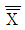
=3.455,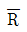
=0.03이었다. 이 경우 공정능력지수(Cp)는 약 얼마인가? (단, n=5일 때 d2=2.326이다.)- 0.646
- 0.725
- 1.649
- 1.725
(정답률: 59%)
70. 제품개발 단계에서 발생하는 기획품질, 설계품질, 공정품질의 확보를 통해, 후 공정의 시행착오를 최소화하고, 제품 신뢰성 확보를 위한 사전 문제점 발굴 및 대책을 신속ㆍ명확히 진행하기 위한 활동은?
- 관리도
- 샘플링 검사
- DR(Design Review)
- CTQ(Critical to Quality)
(정답률: 72%)
71. 계측기의 신뢰성을 확보하기 위한 가장 기본적인 방법은?
- 품질보증
- 보관
- 품질관리
- 교정
(정답률: 59%)
72. 항상 죔새가 발생하는 끼워맞춤은?
- 보통 끼워맞춤
- 중간 끼워맞춤
- 억지 끼워맞춤
- 헐거운 끼워맞춤
(정답률: 73%)
73. 히스토그램의 용도가 아닌 것은?
- 공정을 해석하여 개선점을 찾는다.
- 크기순으로 불량항목을 알 수 있다.
- 규격과 비교하여 공정능력을 파악한다.
- 분포의 모양을 파악하여 이를 활용한다.
(정답률: 45%)
74. 벤치마킹 기법에 관한 설명 중 틀린 것은?
- 벤치마킹은 프로세스보다는 완제품이나 서비스에 초점이 집중된다.
- 벤치마킹은 경쟁업체 뿐만 아니라 모든 조직을 이해하는 데 사용 가능하다.
- 미국 제록스사의 교육 및 조직개발 전문가 모임에서의 용어 사용을 시초로 본다.
- 벤치마킹이란 지속적인 개선을 달성하기 위한 내부 활동 기능 혹은 관리능력을 외부적인 비교시각을 통해 평가하고 판단하는 것이다.
(정답률: 70%)
75. 표준화의 목적이 아닌 것은?
- 보호무역의 촉진
- 기능과 치수의 호환성
- 안전ㆍ건강 및 생명의 보호
- 소비자 및 공동사회의 이익보호
(정답률: 68%)
76. 품질경영 추진 부서의 담당 업무 중 중요항목에 해당하지 않는 것은?
- 품질관리 기법의 개발
- 관리계획과 관리항목의 명확화
- 품질보증시스템의 체계화와 개선
- 품질방침, 목표, 계획 확립의 명시
(정답률: 42%)
77. 사내규격은 규격을 제정하려고 하는 대상에 따라 3가지로 분류하는데 이에 해당하지 않는 것은?
- 기본규격
- 제품규격
- 방법규격
- 운영규격
(정답률: 40%)
78. 제품책임의 법적 구성에 관한 설명 중 틀린 것은?
- 민사책임은 불법행위책임과 계약책임 등으로 분류된다.
- 계약책임은 보증책임과 제조물책임 등으로 분류된다.
- 불법행위책임은 과실책임과 엄격책임 등으로 분류된다.
- 법률상의 배상책임은 민사책임과 형사책임 등으로 분류된다.
(정답률: 59%)
79. 품질경영시스템-요구사항(KS Q ISO 9001:2009)의 자원관리에서 조직이 필요한 자원을 결정하고 확보/제공하여야 하는 이유는?
- 취해진 조치의 효과성을 평가
- 고객요구사항 충족에 의한 고객만족의 증진
- 제품 품질에 영향을 미치는 업무를 수행하는 인원에 대해 필요한 적격성 결정
- 품질경영시스템 도입의 필요성을 위하여 교육훈련을 제공하거나 기타 조치
(정답률: 47%)
80. 품질보증의 뜻을 가장 올바르게 표현한 것은?
- 소비자와의 약속이며 계약이다.
- 철저한 검사와 수리를 주축으로 하는 것이다.
- 일정한 기간 동안 무상수리를 보증하는 것이다.
- 클레임 발생 시 적합품과의 교환을 즉시 보증하는 것이다.
(정답률: 81%)